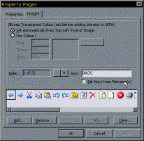

ImageList Class Example, VB5 or VB6 (57K)
ImageList Class Example, VB5 or VB6 (57K)
 ImageList Control Documentation (2K)
ImageList Control Documentation (2K)
 VB5 ImageList Control Binary (33K)
VB5 ImageList Control Binary (33K)
 VB5 ImageList Demonstration (89K)
VB5 ImageList Demonstration (89K)
 VB5 ImageList Full Source (153K)
VB5 ImageList Full Source (153K)
 VB6 ImageList Control Binary (32K)
VB6 ImageList Control Binary (32K)
 VB6 ImageList Demonstration (56K)
VB6 ImageList Demonstration (56K)
 VB6 ImageList Full Source (121K)
VB6 ImageList Full Source (121K)
 Bugs: 6 / 6
Bugs: 6 / 6
 Issues: 0 / 0
Issues: 0 / 0
 Questions: 0 / 0
Questions: 0 / 0
 29 Mar 2003
29 Mar 2003
Fixed all problems with inconsistent indexes being returned by the methods. Indexes returned by the control are now always 1-based. The ItemPicture method consequently now works correctly.
 Using the System Image List with (and without) vbAccelerator Controls
Using the System Image List with (and without) vbAccelerator Controls
 Displaying Alpha (32bit) Icons with ImageLists
Displaying Alpha (32bit) Icons with ImageLists

vbAccelerator ImageList Control and Class v2.0
Use COMCTL32.DLL directly to create an ImageList and take full control of icons at all colour depths and sizes.
As a number of my controls require image list support (Rebar and Toolbar control, Tab Control, S-Grid, Icon Menu Control, ActiveX Popup Menu DLL, Owner Drawn ComboEx Control and the Owner Drawn Combo and List box Control), it was about time I provided an Image List control to support them, so you don't have to distribute 590kb of COMCTL32.OCX just to get images in your app.
Well here it is. I completed the control, and it has a full design-time interface (see above) with a number of new features which you will probably find very useful if you're used to the MS version. But, having done it I was alarmed to discover than my OCX was 131kb! The problem is with this control is you need nice serialisation code and property page support otherwise it isn't any use. But the penalty of this is that you are bound to end up with something heavier than if you go the code-only route.
Another option if you are interested in lean, serious code is to get all the functionality from a class, which will add just 30kb of code to your project. There's no subclassing or hooky API calls, so there's no danger of making your project unstable in the IDE by adding it. You can load all the icons in one go from a picture strip containing all the images in series (stored as a file or a resource bitmap). The control version lets you create a picture strip and save it and then you ditch the control and use the class instead. A bit of an expensive use of a control, but anyway...
Note that this control isn't a direct replacement for the Common Controls version. You can't directly attach it to a MS TreeView or ListView etc and get that to work. It does, however, directly attach to all the vbAccelerator controls that require an ImageList (note that they also support the MS ImageList). Just pass the return value of the hIml property to the relevant ImageList method.
Features
The features of this image list control are:
- Add all images at the same time from a picture containing a strip of images. Also, the image list has a method which creates a picture strip from icons added in. Images can be loaded easily from files, resources, bitmap handles or VB Picture objects.
- No icon size/colour depth restriction. If you have icons that are 24x24 in millions of colours, the ImageList will
load them, unlike the VB/COM StdPicture object which first stretches them to 32x32, reduces the colour depth to 16 colours
and then squashes them back to 24x24!
Updated! the previous version could fail to pick the correct icon size from multi-resource icons, leading to stretching or squashing. The closest size match is now used. - Specify the colour depth the ImageList should run in. Lower colour depths mean less resource usage, higher depths mean better icons!
- At design time, you can clear the images, or change their order without having to add/ remove each one separately.
- Image draw method supports drawing icons in normal, selected, dithered with specified colour and disabled modes.
- Swap or make copies of images in the image list.
- Get a real API hIcon from any image in the image list, regardless of what format it was originally added in. This function will make for a great icon editor! Just remember to call DestroyIcon on the hIcon returned when you've finished with it...
- New! Add .CUR (cursor) and .ANI (animated cursor) files to the Image List. If you import an animated cursor, you get the option of importing all frames or just the first one.
- New! A much better user interface for the control version:
Set up keys at design time - optionally you can have the key automatically set based on the filename of the image you are adding, which can be a great time saver.
Add multiple files from the File Open dialog.
Choose whether the control automatically determines the transparent colour of bitmaps you are adding, or choose the transparent colour using a Colour Picker dialog (rather than having to remember the correct RGB value..)
To get a feel for the methods and use of the image list, download one of the sample files and check it out.